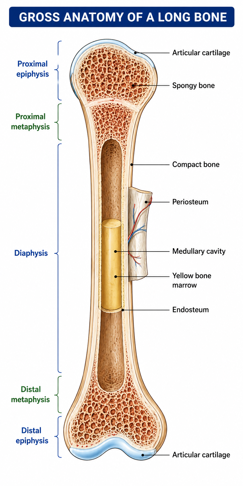
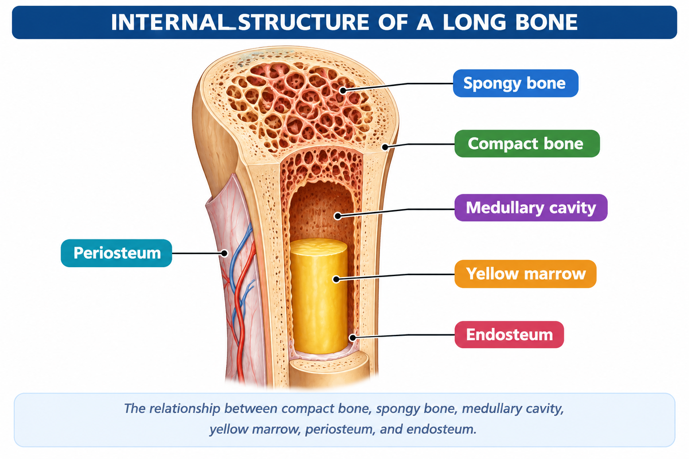
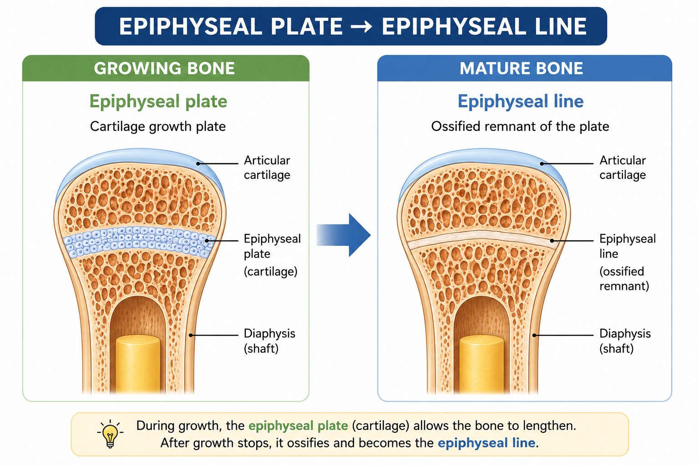

🦴 Structure of a Bone
A typical long bone has a shaft called the diaphysis and expanded ends called the epiphyses. Between the shaft and each epiphysis is a metaphysis. Long bones also contain compact and spongy bone, marrow spaces, and specialized coverings and joint surfaces.
🔵 The Basic Parts of a Long Bone
The main regions of a long bone are the diaphysis, the proximal and distal epiphyses, and the metaphyses between them.

🧱 Inside the Bone
Long bones contain two major types of bone tissue. Compact bone forms the dense outer portion, while spongy bone forms a lighter, trabecular network, especially inside the epiphyses.
The shaft contains a central medullary cavity. In a typical adult long bone, this cavity contains yellow bone marrow.

🛡️ Coverings and Joint Surface
A fibrous membrane covering the outer surface of bone except at articular surfaces. It contains blood vessels and nerves and provides attachment for tendons and ligaments.
A thin membrane lining internal bone surfaces, including the medullary cavity.
Hyaline cartilage covering the joint surfaces of epiphyses. It helps reduce friction and absorb mechanical stress at joints.
🌱 The Growth Region
In a growing long bone, the epiphyseal plate is a layer of hyaline cartilage associated with longitudinal bone growth. After growth-plate closure, it becomes an epiphyseal line.

🩸 Blood Supply
Long bones receive blood through vessels that enter the bone through openings such as the nutrient foramen. Nutrient vessels pass into the bone and supply deeper tissues, including the marrow region.
📋 Main Parts at a Glance
| Part | Main feature |
|---|---|
| Diaphysis | Shaft |
| Epiphysis | Expanded end |
| Metaphysis | Transition between shaft and epiphysis |
| Compact bone | Dense outer bone |
| Spongy bone | Trabecular internal bone |
| Medullary cavity | Central marrow cavity |
| Periosteum | Outer covering |
| Endosteum | Inner lining |
| Articular cartilage | Covers joint surface |
| Epiphyseal plate | Growth plate in a growing bone |